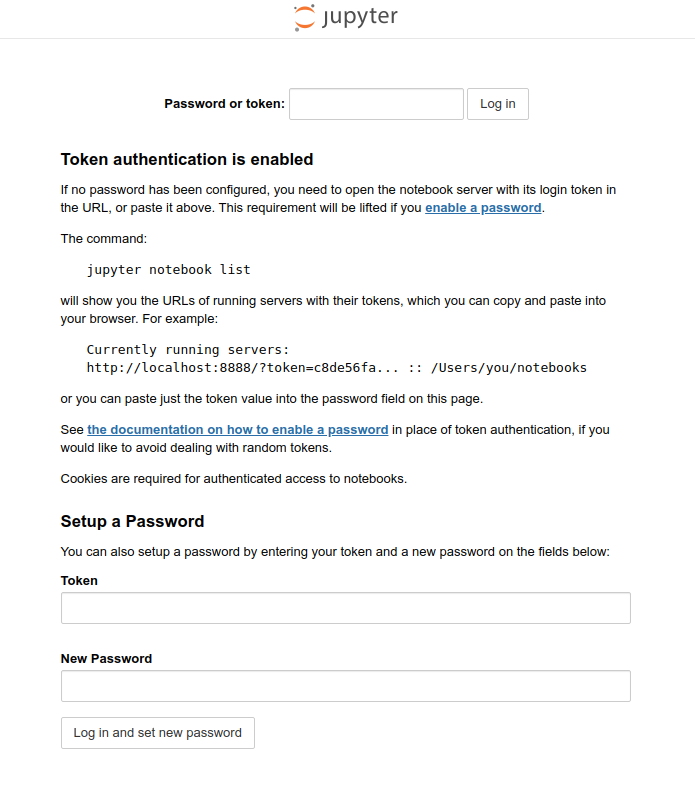

Jupyter¶

Jupyter is a large umbrella project that covers many different software offerings and tools, including the popular Jupyter Notebook and JupyterLab web-based notebook authoring and editing applications. The Jupyter project and its subprojects all center around providing tools and standards for interactive computing with computational notebooks. The set of free software, open standards, and web services supported by Jupyter can be used to implement interactive computing in notebooks across any programming language.
We strongly recommend using the Jupyter application provided through modules whenever possible. The applications for interacting with Jupyter notebooks that are supported in UL HPC systems through modules are the following.
- JupyterLab provided by
tools/JupyterLab: a web-based interactive development environment for notebooks, code, and data; typically used to develop notebook documents.
- Jupyter Notebook provided by
tools/JupyterNotebook: a notebook authoring application; notebooks are shareable document that combines computer code, plain language descriptions, data, and visualizations.
- JupyterHub provided by
tools/JupyterHub: a multi-user Hub that spawns and manages multiple instances of the single-user Jupyter notebook server; useful for sharing multiple instances of a notebook to a group of users.
Warning
Modules are not allowed on the access servers. To test interactively, remember to ask for an interactive job first using for instance the si tool.
Notebooks¶
Notebooks are documents that contain computer code, data, and rich text elements such as normal test, graphical equations, links, figures, and widgets. The main advantage of Notebooks is that the concentrate human-readable analysis, descriptions, and results, together with executable versions of code data in a single document. As a result, notebooks are particularly popular for exploratory data analysis, where they allow the interactive development of reproducible data analytic pipelines. Notebooks can be shared or converted into static HTML documents, and they are thus a powerful teaching tool too.
Kernels¶
Notebooks are associated with kernels, processes that actually execute the code of the notebook. Jupyter applications provide a default IPython kernel in the environment where Jupyer lab runs. Other environments can export a kernel to a Jupyter application instances, allowing each instance to launch interactive session inside environments others than the environment where Jupyter application is installed.
Whenever possible use the Python module to create your Python environments. Modules have been configured for optimal performance in our systems. If your application requires a different version of Python you can always install one with Conda or other tools. To create a Python environment for your kernel, start by loading the Python module and then create the environment.
module load lang/Python
python -m venv ${HOME}/environments/notebook_venv
Install the packages that you require in your environment, and then install the IPython Kernel for Jupyter (ipykernel) package.
module load lang/Python
source ${HOME}/environments/notebook_venv/bin/activate
pip install ipykernel
deactivate
The IPython Kernel for Jupyter (ipykernel) provides Jupyter kernels that work with IPython, a toolkit for using Python interactively.
You can then install a kernel for your environment; the kernel is used by Jupyter applications to create notebooks for the environment. Jupyter applications provide a default environment with a kernel and also search some default locations for additional kernels. The user default location is selected with the --user option of ipykernel and is located in:
${HOME}/.local/share/jupyter/kernels
With the command,
module load lang/Python
source ${HOME}/environments/notebook_venv/bin/activate
python -m ipykernel install --user --name notebook_venv --display-name "Notebook"
deactivate
the kernel will be created in the default user location:
${HOME}/.local/share/jupyter/kernels/notebook_venv
and will appear with the name "Notebook" in the list of available kernels in all Jupyter applications launched by the user.
Kernels in arbitrary directories
Kernels can be installed in arbitrary directories. For instance you store kernels in a project directory to share them with other members of your team. In this case use the --prefix option when creating the kernel.
module load lang/Python
source ${HOME}/environments/notebook_venv/bin/activate
python -m ipykernel install --prefix=${PROJECTHOME}/project_name/environments/jupyter_env --name notebook_venv --display-name "Notebook"
deactivate
To use a kernel from a custom installation path instruct the Jupyter application to search for environments in the extra path with the --notebook-dir option. For instance with the command
module load tools/JupyterLab
jupyter lab --notebook-dir=${PROJECTHOME}/project_name/environments/jupyter_env
the "Notebook" will be listed in the available kernels in the Jupyter lab application.
Kernels for Conda environments
Some packages may require a specific version of Python. In this case install the required Python version in a Conda environment. Then follow the steps above to create the Python environment while using the Python of the Conda environment. For instance, the commands
micromamba create --name conda_notebook conda-forge::python=3.8
micromamba run --name conda_notebook python -m venv ${HOME}/environments/conda_notebook_venv
source ${HOME}/environments/conda_notebook_vemv/bin/activate
python -m ipykernel install --user --name conda_notebook_venv --display-name "Conda notebook"
deactivate
conda_notebook_venv environment with Python 3.8.
Note that Jupyter does not currently support kernels for Conda environments, so you have to create a Python environment (venv) for your kernel.
Environments with site packages¶
The UL HPC systems offer optimized Python packages for applications such as PyTorch. You can access the optimized packages in your environments if you build your environment with access to system site packages. For instance, to access the PyTorch packages that have been optimized for GPUs in the Iris GPU nodes create the environment for your notebook as follows.
module load ai/PyTorch/2.3.0-foss-2023b-CUDA-12.6.0
python -m venv --system-site-packages ${HOME}/environments/notebook_venv
source ${HOME}/environments/notebook_venv/bin/activate
pip install ipykernel
python -m ipykernel install --user --name notebook_venv --display-name "Notebook"
deactivate
With the --system-site-packages flag, the packages provided by the ai/PyTorch/2.3.0-foss-2023b-CUDA-12.6.0 module are accessible inside the notebook_venv environment.
Using environments with system site packages
Before using an environment with system site packages, remember to load the module that provides the system site packages. For instance, in our example, you need to load the PyTorch module
module load ai/PyTorch/2.3.0-foss-2023b-CUDA-12.6.0
Working with JupyterLab¶
JupyterLab is a web-based interactive development environment for notebooks, code, and data. Typically used to develop notebook documents, is highly extensible, and more feature-rich that the traditional Jupyter Notebook. In UL HPC systems Jupyter lab is provided by the tools/JupyterLab module. Load the Jupyter module with the following command.
module load tools/JupyterLab
Starting a JupyterLab session¶
Jupyter notebooks must be started as slurm jobs. The following script is a template for Jupyter submission scripts that will rarely need modifications. Most often you will need to modify the session duration (--time SBATCH option).
Slurm Launcher script for Jupyter Notebook
#!/usr/bin/bash --login
#SBATCH --job-name=Jupyter
#SBATCH --nodes=1
#SBATCH --ntasks-per-node=1
#SBATCH --cpus-per-task=2 # Change accordingly, note that ~1.7GB RAM is proivisioned per core
#SBATCH --partition=batch
#SBATCH --qos=normal
#SBATCH --output=%x_%j.out # Print messages to 'Jupyter_<job id>.out
#SBATCH --error=%x_%j.err # Print debug messages to 'Jupyter_<job id>.err
#SBATCH --time=0-01:00:00 # Change maximum allowable jupyter server uptime here
print_error_and_exit() { echo "***ERROR*** $*"; exit 1; }
module purge || print_error_and_exit "No 'module' command"
# Load the JupyterLab module
module load tools/JupyterLab
#######################################################################
# IF THE KERNEL YOU UARE PLANNING TO USE IS USING SITE PACKAGES, THEN #
# LOAD ANY OTHER MODULES REQUIRED BY THE KERNEL HERE. #
#######################################################################
declare loopback_device="127.0.0.1"
declare port="8888"
declare connection_instructions="connection_instructions.log"
jupyter lab --ip=${loopback_device} --port=${port} --no-browser &
declare lab_pid=$!
# Add connection instruction
echo "# Connection instructions" > "${connection_instructions}"
echo "" >> "${connection_instructions}"
echo "To access the jupyter notebook execute on your personal machine:" >> "${connection_instructions}"
echo "ssh -N -J ${USER}@access-${ULHPC_CLUSTER}.uni.lu:8022 -L ${port}:${loopback_device}:${port} ${USER}@$(hostname -i)" >> "${connection_instructions}"
echo "" >> "${connection_instructions}"
echo "To access the jupyter notebook if you have setup a special key (e.g ulhpc_id_ed25519) to connect to cluster nodes execute on your personal machine:" >> "${connection_instructions}"
echo "ssh -i ~/.ssh/hpc_id_ed25519 -N -J ${USER}@access-${ULHPC_CLUSTER}.uni.lu:8022 -L ${port}:${loopback_device}:${port} ${USER}@$(hostname -i)" >> "${connection_instructions}"
echo "" >> "${connection_instructions}"
echo "Then navigate to:" >> "${connection_instructions}"
# Wait for the server to start
sleep 2s
# Wait and check that the landing page is available
curl \
--connect-timeout 10 \
--retry 5 \
--retry-delay 1 \
--retry-connrefused \
--silent --show-error --fail \
"http://${loopback_device}:${port}" > /dev/null
# Note down the URL
jupyter lab list 2>&1 \
| grep -E '\?token=' \
| awk 'BEGIN {FS="::"} {gsub("[ \t]*","",$1); print $1}' \
| sed -r 's/([0-9]{1,3}\.){3}[0-9]{1,3}/127\.0\.0\.1/g' \
>> "${connection_instructions}"
# Save some debug information
echo -e '\n===\n'
echo "AVAILABLE LABS"
echo ""
jupyter lab list
echo -e '\n===\n'
echo "CONFIGURATION PATHS"
echo ""
jupyter --paths
echo -e '\n===\n'
echo "KERNEL SPECIFICATIONS"
echo ""
jupyter kernelspec list
# Wait for the user to terminate the lab
wait ${lab_pid}
Once your job is running (see Joining/monitoring running jobs), you can combine
sshforwarding, and- an
sshjump through the login node,
to connect to the notebook from your laptop. Open a terminal on your laptop and copy-paste the ssh command contained in the file connection_instructions.log, and then navigate to the webpage link provided.
Example content of connection_instructions.log
> cat connection_instructions.log
# Connection instructions
To access the jupyter notebook execute on your personal machine:
ssh -N -J gkafanas@access-aion.uni.lu:8022 -L 8888:127.0.0.1:8888 gkafanas@172.21.12.29
To access the jupyter notebook if you have setup a special key (e.g ulhpc_id_ed25519) to connect to cluster nodes execute on your personal machine:
ssh -i ~/.ssh/ulhpc_id_ed25519 -N -J gkafanas@access-aion.uni.lu:8022 -L 8888:127.0.0.1:8888 gkafanas@172.21.12.29
Then navigate to:
http://127.0.0.1:8888/?token=b7cf9d71d5c89627250e9a73d4f28cb649cd3d9ff662e7e2
As the instructions suggest, you access the jupyter lab server in the compute node by the following SSH command.
ssh -N -J gkafanas@access-aion.uni.lu:8022 -L 8888:127.0.0.1:8888 gkafanas@172.21.12.29
The above command,
- opens a connection to your allocated cluster compute node jumping through the login node (
-J gkafanas@access-aion.uni.lu:8022 gkafanas@172.21.12.29), and - forwards the port of the Jupyter server running in the compute node to your local machine (
-L 8888:127.0.0.1:8888).
Then, open the connection to the browser in your local machine by following the given link:
http://127.0.0.1:8888/?token=b7cf9d71d5c89627250e9a73d4f28cb649cd3d9ff662e7e2
The link provides the access token, so you should be able to login without a password.
Warning
Do not forget to click on the quit button when finished to stop the Jupyter server and release the resources. Note that in the last line of the submission script the job waits for your Jupyter service to finish.
If you encounter any issues, have a look in the debug output in Jupyter_<job id>.err. Generic information about the setup of your system is printed in Jupyter_<job id>.out.
Typical content of Jupyter_<job id>.err
> cat Jupyter_3664038.err
[I 2024-11-13 23:19:52.538 ServerApp] jupyter_lsp | extension was successfully linked.
[I 2024-11-13 23:19:52.543 ServerApp] jupyter_server_terminals | extension was successfully linked.
[I 2024-11-13 23:19:52.547 ServerApp] jupyterlab | extension was successfully linked.
[I 2024-11-13 23:19:52.766 ServerApp] notebook_shim | extension was successfully linked.
[I 2024-11-13 23:19:52.808 ServerApp] notebook_shim | extension was successfully loaded.
[I 2024-11-13 23:19:52.812 ServerApp] jupyter_lsp | extension was successfully loaded.
[I 2024-11-13 23:19:52.813 ServerApp] jupyter_server_terminals | extension was successfully loaded.
[I 2024-11-13 23:19:52.814 LabApp] JupyterLab extension loaded from /home/users/gkafanas/environments/jupyter_env/lib/python3.11/site-packages/jupyterlab
[I 2024-11-13 23:19:52.814 LabApp] JupyterLab application directory is /mnt/aiongpfs/users/gkafanas/environments/jupyter_env/share/jupyter/lab
[I 2024-11-13 23:19:52.815 LabApp] Extension Manager is 'pypi'.
[I 2024-11-13 23:19:52.826 ServerApp] jupyterlab | extension was successfully loaded.
[I 2024-11-13 23:19:52.827 ServerApp] Serving notebooks from local directory: /mnt/aiongpfs/users/gkafanas/support/jupyter
[I 2024-11-13 23:19:52.827 ServerApp] Jupyter Server 2.14.2 is running at:
[I 2024-11-13 23:19:52.827 ServerApp] http://127.0.0.1:8888/lab?token=fe665f90872927f5f84be627f54cf9056908c34b3765e17d
[I 2024-11-13 23:19:52.827 ServerApp] http://127.0.0.1:8888/lab?token=fe665f90872927f5f84be627f54cf9056908c34b3765e17d
[I 2024-11-13 23:19:52.827 ServerApp] Use Control-C to stop this server and shut down all kernels (twice to skip confirmation).
[C 2024-11-13 23:19:52.830 ServerApp]
To access the server, open this file in a browser:
file:///home/users/gkafanas/.local/share/jupyter/runtime/jpserver-2253096-open.html
Or copy and paste one of these URLs:
http://127.0.0.1:8888/lab?token=fe665f90872927f5f84be627f54cf9056908c34b3765e17d
http://127.0.0.1:8888/lab?token=fe665f90872927f5f84be627f54cf9056908c34b3765e17d
[I 2024-11-13 23:19:52.845 ServerApp] Skipped non-installed server(s): bash-language-server, dockerfile-language-server-nodejs, javascript-typescript-langserver, jedi-language-server, julia-language-server, pyright, python-language-server, python-lsp-server, r-languageserver, sql-language-server, texlab, typescript-language-server, unified-language-server, vscode-css-languageserver-bin, vscode-html-languageserver-bin, vscode-json-languageserver-bin, yaml-language-server
[I 2024-11-13 23:19:53.824 ServerApp] 302 GET / (@127.0.0.1) 0.47ms
Typical content of Jupyter_<job id>.err
> cat Jupyter_3664038.out
===
AVAILABLE LABS
Currently running servers:
http://127.0.0.1:8888/?token=fe665f90872927f5f84be627f54cf9056908c34b3765e17d :: /mnt/aiongpfs/users/gkafanas/support/jupyter
===
CONFIGURATION PATHS
config:
/home/users/gkafanas/environments/jupyter_env/etc/jupyter
/mnt/aiongpfs/users/gkafanas/.jupyter
/usr/local/etc/jupyter
/etc/jupyter
data:
/home/users/gkafanas/environments/jupyter_env/share/jupyter
/home/users/gkafanas/.local/share/jupyter
/usr/local/share/jupyter
/usr/share/jupyter
runtime:
/home/users/gkafanas/.local/share/jupyter/runtime
===
KERNEL SPECIFICATIONS
Available kernels:
other_python_env /home/users/gkafanas/environments/jupyter_env/share/jupyter/kernels/other_python_env
python3 /home/users/gkafanas/environments/jupyter_env/share/jupyter/kernels/python3
Troubleshooting
If there is no connection link in the connection instructions, for instance
Then navigate to:
Jupyter by deleting ~/.jupyter.
Environment configuration¶
Jupyter generates various files during runtime, and reads configuration files from various locations. You can control these paths using environment variables. For instance, you may set the JUPYTER_RUNTIME_DIR to point somewhere in the /tmp directory for better performance.
JupyterLab¶
JUPYTER_CONFIG_DIR: set the directory for Jupyter config files; default is${HOME}/.jupyter.JUPYTER_PATH: extra directories to search for installable data files, such as kernelspecs and notebook extensions; should contain a series of directories, separated byos.pathsep(;on Windows and:on Unix); directories given inJUPYTER_PATHare searched before other locations.JUPYTER_DATA_DIR: set the user data directory which contains files such as kernelspecs, notebook extensions, or voila templates; default is${HOME}/.local/share/jupyter/(respects${XDG_DATA_HOME}).JUPYTER_RUNTIME_DIR: set the location where Jupyter stores runtime files, such as connection files, which are only useful for the lifetime of a particular process; default is${JUPYTER_DATA_DIR}/runtime.
IPython Kernel for Jupyter (ipykernel)¶
IPYTHONDIR: path to a directory where IPython will store user data; IPython will create it if it does not exist.
Password protected access¶
You can also set a password when launching the Jupyter lab. To setup your password, open an interactive session and load the tools/JupyterLab module. Then execute the following command.
$ jupyter lab password
Enter password:
Verify password:
[JupyterPasswordApp] Wrote hashed password to /mnt/aiongpfs/users/gkafanas/.jupyter/jupyter_server_config.json
To login to a password protected session, navigate direct you browser to the URL http://127.0.0.1:8888/ and provide your password. You may have to logout to clear the page cache if you have logged in previously with a token.
Info
You may have to logout to clear the page cache if you have logged in previously with a token.
Typical content of a password protected login page

Setting up passwords for Jupyter Notebooks
You can setup password protected logins in Jupyter notebooks similarly. Load the tools/JupyterNotebook module and execute the following command.
$ jupyter notebook password
Enter password:
Verify password:
[JupyterPasswordApp] Wrote hashed password to /mnt/aiongpfs/users/gkafanas/.jupyter/jupyter_server_config.json
To login to a running notebook, navigate to http://127.0.0.1:8888/ and enter your password. You may have to logout to clear the page cache if you have logged in previously with a token.
Install Jupyter¶
In case you need some features of JupyterLab that are not available in the versions of JupyterLab provided by modules in our systems, you can install JupyterLab in a Python environment.
module load lang/Python #Loading default Python
python -m venv ${HOME}/environments/jupyter_venv
source ${HOME}/environments/jupyter_venv/bin/activate
pip install jupyterlab
Debugging installation issues
If the installation of JupyterLab fails, try updating the version of pip in your environment,
source ${HOME}/environments/jupyter_venv/bin/activate
python -m pip install --upgrade pip
and try installing JupyterLab again.
After installing your required version of JupyterLab, you can install your packages and ipykernel
- either in a separate Python environment, or
- at the same python environment where JupyterLab is installed.
Using a separate Python environment
To use a separate Python environment create a notebook and export its kernel so that the JupyterLab installed in your custom environment can locate it. Remember, you only need to load the environment with JupyterLab, to launch JupyterLab, not the environment of the kernel.
Using the Python environment of JupyterLab
Every environment with JupyterLab already contains ipykernel to provide a default notebook. You can install all your packages directly in the jupyter_venv and use the default kernel. Note that in this manner you can only support one environment, and the packages you install in that environment must be compatible with the packages require by JupyterLab.
Installing the classic Notebook
If you prefer to install the classic notebook, you also need to install the ipykernel manually. So, replace
pip install jupyterlab
pip install jupyter ipykernel
jupyter_env Python environment.